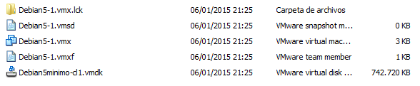
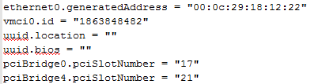
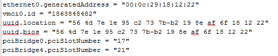
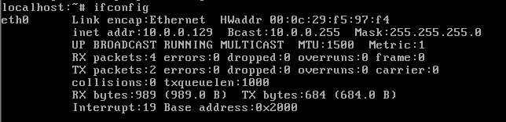
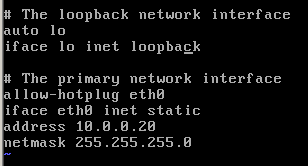
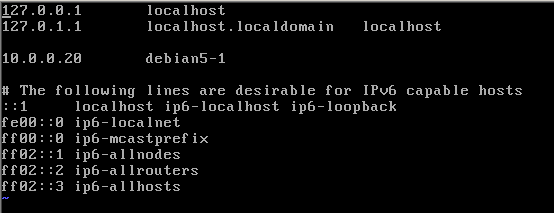

Ejercicio 1 - Clonado de
máquinas virtuales usando copias físicas
El escenario que presenta este ejercicio es el siguiente: tenemos una
máquina virtual con un servidor Debian 5 básico
que toma su IP por DHCP (la máquina Debian5minimo). Partiendo de
esta máquina virtual queremos crear una
instalación en la que tengamos corriendo simultaneamente dos
servidores Debian 5 distintos, configurados con direcciones IP
estáticas; para ello recurriremos a crear dos clones
físicos completos de la máquina Debian5minimo,
usando dos métodos distintos:
La aplicación guiada de clonado del VMware
Workstation.
Una copia manual de la máquina Debian5minimo.
Para realizar el ejercicio, seguimos estos pasos:
1)
En la carpeta D:\practicas\MV\Debian5minimo
hacer doble click sobre el fichero Debian5minimo.vmx
para abrirlo con VMware Workstation.
2) Usando el
menú VM
-> Manage -> Clone, lanzar el Wizard de
clonado de máquinas. Seguir el procedimiento descrito en esta animación (pero usando D:\practicas\MV\Debian5-1 como directorio destino).
3) Observar
que ahora tenemos dos máquinas virtuales abiertas en VMware
Workstation: Debian5-1
y Debian5minimo.
Como esta última es nuestra máquina
"patrón" (es decir, la que usamos como base, y que por ello
no queremos cambiar), la cerramos (usando el menú File -> Close Tab)
para evitar que por accidente la pongamos en marcha y la confundamos
con una de las copias (que sí queremos modificar).
4) Ir al
directorio D:\practicas\MV\Debian5-1.
Vemos que la herramienta de clonado no sólo ha copiado los
ficheros físicos, sino que les ha cambiado el nombre para
que no coincidan con Debian5minimo.

5) En el
VMware Workstation pulsar en Edit
virtual machine Settings y abrir la pestaña Options. Podemos ver
que la herramienta de clonado también ha cambiado el nombre
de la máquina virtual a Debian5-1.
Pulsar Cancel
para cerrar sin cambiar nada.
6) En el
directorio D:\practicas\MV\Debian5-1,
abrir con Notepad++ el fichero Debian5-1.vmx.
Igualmente, en el directorio D:\practicas\MV\Debian5minimo,
abrir con Notepad++ el fichero Debian5minimo.vmx.
Al comparar los dos ficheros observaremos que:
en Debian5-1.vmx
los identificadores uuid.location
y uuid.bios
están vacíos.
sin embargo, ambas máquinas siguen teniendo (por
el momento) el mismo identificador de MAC.


7) Cerrar
Notepad++, teniendo buen cuidado de no modificar ninguno de los dos
ficheros.
8) Arrancar Debian5-1. Una vez
que termine el arranque, hacer login como usuario root (password deii15).
9) Ejecutar ifconfig. Veremos
que, en el interfaz eth0, la dirección de MAC ya no se
corresponde con la que vimos en el fichero anteriormente.

10) Si, en
el directorio D:\practicas\MV\Debian5-1
abrimos de nuevo con Notepad++ el fichero Debian5-1.vmx,
veremos que no sólo la dirección de MAC ha
cambiado (y coincide con la mostrada por ifconfig), sino que
también se han generado automáticamente los dos
identificadores uuid. Cerrar Notepad++ sin cambiar nada.
Vamos a reconfigurar el servidor Debian para que tome la IP estática 10.0.0.20, y como hostname Debian5-1. Para ello hacemos lo siguiente:
11) Ejecutamos cd /etc/network para ir al directorio de configuración de la red.
12) Usando vi, editamos el fichero interfaces para que quede de la siguiente forma:

13) Ejecutar cd /etc, y editar con vi el fichero hostname. Sustituir el nombre actual (localhost) por el que deseamos (debian5-1). Salvar y cerrar el fichero.
14) Editar ahora el fichero hosts, y añadir una línea con la resolución a dirección IP del nombre debian5-1, como muestra la figura.

15) Finalmente, ejecutar update-rc.d -f exim4 remove
(deshabilitamos el servidor de correo para que un timeout que se
produce en el arranque, por la ausencia de servidor de nombres, no nos
demore innecesariamente el arranque de la máquina).
16) Reiniciar la máquina virtual usando reboot. Una vez completo el reinicio, hacer login como root y comprobar, usando ifconfig, que la máquina ahora se llama debian5-1, y que ha tomado la dirección IP 10.0.0.20.
Ahora crearemos el segundo servidor Debian. Para ello haremos manualmente una copia de la máquina Debian5minimo, y la modificaremos también manualmente.
17) Crear el directorio D:\practicas\MV\Debian5-2, y copiar (NO mover) al mismo los ficheros D:\practicas\MV\Debian5minimo\Debian5minimo.vmx y D:\practicas\MV\Debian5minimo\Debian5minimo.vmdk.
18) En D:\practicas\MV\Debian5-2, renombrar Debian5minimo.vmx a Debian5-2.vmx, y Debian5minimo.vmsd a Debian5-2.vmsd.
19) Editar con Notepad++ el fichero Debian5-2.vmx y sustituir Debian5minimo por Debian5-2 en las siguientes líneas:
displayName
scsi0:0.filename
extendedConfigFile
20) Salvar y cerrar el fichero,
y pulsar dos veces sobre él para abrirlo con VMware Workstation.
Arrancar la máquina virtual; como la hemos copiado manualmente,
Workstation nos pregunta si debe cambiar los identificadores uuid
y dirección de MAC. Dado que queremos evitar cualquier posible
colisión con la máquina original, que aún existe,
pulsamos I copied it para forzar el cambio.
21) Repetir los mismos pasos de configuración que para la máquina Debian5-1, pero ahora la dirección IP estática es la 10.0.0.21, y el hostname será debian5-2
22) Reiniciar la máquina con reboot, hacer login como root, y comprobar con ifconfig que la IP es 10.0.0.21, y que hostname es debian5-2.
23) Finalmente, comprobar que ambos servidores se ven, haciendo ping 10.0.0.21 en debian5-1, y ping 10.0.0.20 en debian5-2.
24) Una vez comprobado que los servidores están correctamente configurados, apagar ambos servidores, usando telinit 0 en cada uno de ellos